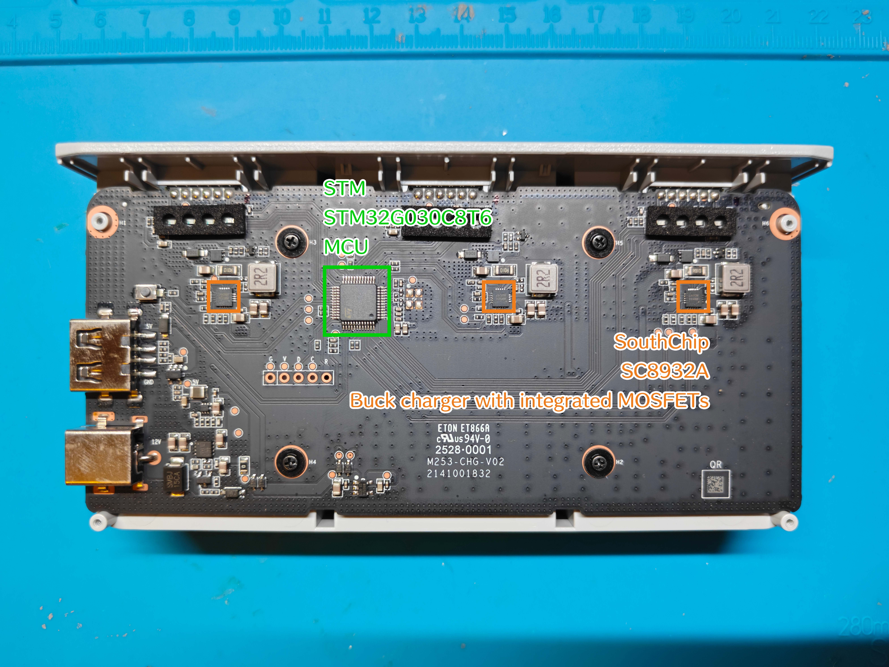

电池和充电器¶
硬件¶
主板图示¶
图片和图片上的标注是本人拍摄和绘制的

硬件详细信息¶
| 类型 | 制造商 | 型号 | 规格 | 手册或详情页 |
|---|---|---|---|---|
| 嵌入式控制器 | STM | STM32G030C8T6 | 64Mhz Cortex-M0+ | 详情页 |
| 锂电池充电芯片 | SouthChip | SC8932A | 详情页 |
通信¶
引脚定义¶
Potensic ATOM 2 使用智能电池，以 2.0mm 6-PIN 刀片型电池连接器与机身和充电器相连，并使用 UART 与它们通讯
电池的引脚定义以充电管家正面 (带有 LED 和按键) 为参考
| 编号 | 引脚 | 描述 |
|---|---|---|
| 1 | R | UART，电池 BMS 上报数据到充电器 |
| 2 | N | GND，在充电器中也被用于检测电池接入 |
| 3 | P | VCC |
| 4 | P | VCC |
| 5 | N | GND |
| 6 | T | UART，充电器发送控制信号、心跳到电池 BMS |
数据包¶
部分字段的含义是通过猜测得到的，可能缺少证据支撑，这一部分的字段将被星号标记。可能会在未来修订
充电器¶
充电器在引脚 6 上向电池发送数据，长度是 13 字节，内容是控制信号或心跳
| 偏移 | 字段名 | 长度 | 数值 | 描述 |
|---|---|---|---|---|
| 0 | Header 1 | 1B | 0xFF | 帧起始符 1 |
| 1 | Header 2 | 1B | 0xFE | 帧起始符 2 (充电器标识, 0xFE) |
| 2 | Length | 1B | 0x09 | 后续数据长度 (Byte 3-11) |
| 3 | Channel | 1B | 0x00~0x02 | 充电通道号 (对应 3 槽充电器) |
| 4 | Command | 1B | 0x98 | 状态轮询命令 |
| 5 | Reserved | 1B | 0x00 | 预留 |
| 6 | Control | 1B | 0x01 或 0x00 | 是否开启充电 (1:开启, 0:关闭) |
| 7-10 | Padding | 4B | 0x00 | 填充字节 |
| 11 | Mode | 1B | 0x10 或 0x00 | 是否有外部电源接入 (0x10: 外部电源接入, 0x00: 空闲) |
| 12 | Checksum | 1B | XOR Result | Byte 2 至 Byte 11 的异或和 |
电池¶
电池 BMS 在引脚 1 上向机身或充电器发送数据，长度是 49 字节，内容是电池 BMS 的一些信息
| 偏移 | 字段名 | 长度 | 数值 | 描述 |
|---|---|---|---|---|
| 0 | Header 1 | 1B | 0xFF | 帧起始符 1 |
| 1 | Header 2 | 1B | 0xFD | 帧起始符 2 (电池标识, 0xFD) |
| 2 | Length | 1B | 0x2D | 载荷长度长度 (45 字节) |
| 3 | Echo Ch | 1B | Channel | 回显充电器发送的通道号 |
| 4 | Echo Cmd | 1B | 0x98 | 回显充电器发送的命令字 |
| 5 | Reserved | 1B | 0x00 | 预留 |
| 6-45 | Payload | 40B | Encrypted | 电池 BMS 数据 (加密) |
| 46-47 | * Suffix | 2B | 0x01 0x84 | 固定后缀 / 硬件标识 |
| 48 | Checksum | 1B | XOR Result | Byte 2 至 Byte 47 的异或和 |
电池 BMS 发送的数据中，有 40 字节的加密内容，加密内容使用双层 DES 加密
下面是加密内容在解密后的明文结构，按照大端序排列
| 偏移 | 字段名 | 单位 | 数值 | 描述 |
|---|---|---|---|---|
| 0 | Cell 1 Voltage | mV | uint16 | 第 1 节电芯实时电压 |
| 1 | Cell 2 Voltage | mV | uint16 | 第 2 节电芯实时电压 |
| 2-3 | * Cell 3-4 Ext | - | uint16 | 扩展 |
| 4 | * Status Flags | Mask | uint16 | 0x00C0 代表 CHG/DSG FET 均开启 |
| 5 | Cycle Count | - | uint16 | 电池循环次数 |
| 6 | Remaining Cap | mAh | uint16 | 剩余可用电量 (绝对容量) |
| 7 | Full Charge Cap | mAh | uint16 | 电池当前实际满充容量 |
| 8 | * Time To Empty | min | uint16 | 剩余续航时间 (0xFFFF 为未知) |
| 9 | Temperature | K | uint16 | 开尔文温度 |
| 10 | RSOC | % | uint16 | 相对剩余容量百分比 (0-100) |
| 11 | Current | mA | int16 | 实时电流: 正为充电, 负为放电 |
| 12 | Total Voltage | mV | uint16 | 电池组端总电压 (Cell 1 + Cell 2) |
| 13 | * Avg Current | mA | int16 | 修正后的平均电流 |
| 14 | SOH | % | uint16 | 电池健康度 (当前容量 / 上次满充容量) |
| 15 | * Max Chg Curr | mA | uint16 | 电池允许的最大充电电流限制 |
| 16 | * Hardware Rev | - | uint16 | 硬件版本号 (如 0x0184) |
| 17 | Device ID | - | uint8 | 设备 ID (如 0x76) |
| 18 | FW Version | - | Bitfield | 字节 36: Major; 字节 37: Minor/Patch |
| 19 | * Build ID | - | uint8 | 编译流水号 |